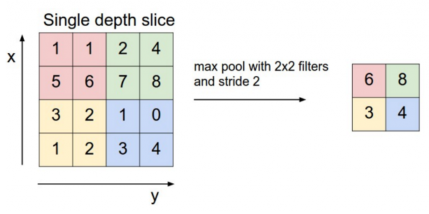
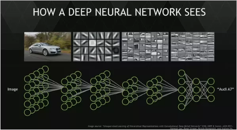

CNN
Table of Contents
1 CNN
1.1 Conv1D

Figure 1: conv
1.2 Conv2D

Figure 2: conv2
kernel=[0,1,2; 2,2,0; 0,1,2] 
1.3 stride
1.4 padding
- W original size
- F kernel size
- S stride
- O output size
- P padding
\(O=\frac{W+2*P-F}{S}+1\)
若考虑 dilation 参数:
- D dilation, 默认为 1
\(O=\frac{W+2*P-(D*(F-1)+1)}{S}+1\)
其中 \(D*(F-1)+1\) 相当于膨胀后的 kernel 大小

Figure 3: padding
valid padding
当 padding = valid 时, input 中无法对齐的部分被丢弃
same padding
当 padding = same 时, input 中无法对齐时会在前后补 0
import tensorflow import tensorflow as tf import numpy as np from tensorflow.keras import layers x = np.random.normal(size=(1, 15, 1)).astype("float32") y = layers.Conv1D(filters = 1, kernel_size = 10, strides = 3, padding = "same")(x) y2 = layers.Conv1D(filters = 1, kernel_size = 15, strides = 3, padding = "same")(x) y3 = layers.Conv1D(filters = 1, kernel_size = 10, strides = 3, padding = "valid")(x) print(x.shape,y.shape,y2.shape,y3.shape)
(1, 15, 1) (1, 5, 1) (1, 5, 1) (1, 2, 1)
当 padding=same 时, \(O=floor(\frac{W}{S})\), 与 kernel 无关. 特别的, 当 S = 1 时, O == W, 这也是 SAME 名字的由来
当 padding=valid 时, \(O=(W - F)//S + 1\)
所以使用 same 能更容易的控制 conv 的 output shape
1.7 1x1 conv2d
1.8 3x3 vs. 5x5
1.9 Deconv2D
Deconv2D 有两种等价的计算方法:
1.9.1 通过加 padding 和 dilation 转换为 Conv2D
1.9.2 通过 gemm+col2im
https://bbs.cvmart.net/articles/1755 假设:
- output 的 shape 为 \(C_{out}*H_{out}*W_{out}\)
- W 的 shape 为 \(C_{out}*C_{in}*K_h*W_h\)
- input 为 \(Cin*Hin*Win\)
计算 Conv2D 的过程为:
- input 通过 im2col 转换为 \((C_{in}*K_h*K_w)*H_{out}*W_{out}\)
- \(W = C_{out}*(C_{in}*K_h*K_w) \implies output = W * input = C_{out}*H_{out}*W_{out}\)
计算 Deconv2D 的过程为:
- \(W^T = C_{out}*(K_h*W_h)*C_{in}\)
- \(output = W^T * input = C_{out}*(K_h*W_h)*H_{in}*W_{in}\)
- 通过 col2im 填充输出为 \(C_{out}*H_{out}*W_{out}\)
我觉得可以这样直观的理解一下 gemm+col2im 的方式:
conv 本质上是把长度为 k 的 block 变成一个点, 实际就是一个 matmul((x,k),(k,1))
deconv 需要把这一个点再变回长度为 k 的 block, 那么做一个 matmul((x,1),(1,k)) 就可以了…
(k,1) 是 conv kernel, (1,k) 是 deconv kernel, 所以 deconv 也叫 conv_transposed
1.10 SeparatableConv2D / DepthwiseConv2D
1.11 Implementation
1.11.1 Trivial
import matplotlib.pyplot as plt import numpy as np from skimage import io, color import scipy.signal def convolve2d(image, kernel): kernel = np.flipud(np.fliplr(kernel)) output = np.zeros_like(image) # Add zero padding to the input image padding=kernel.shape[0]-1 if padding%2!=0: print("error zero_padding") offset=padding//2 image_padded = np.zeros((image.shape[0] + padding, image.shape[1] + padding)) image_padded[offset:-offset, offset:-offset] = image for x in range(image.shape[1]): for y in range(image.shape[0]): output[y,x]=(kernel*image_padded[y:y+kernel.shape[0],x:x+kernel.shape[0]]).sum() return output def show_result(img,title): global orig_image ax1=plt.subplot(1,2,1) ax1.imshow(orig_image, cmap=plt.cm.gray) ax1.axis("off") image_sharpen = img ax2=plt.subplot(1,2,2) ax2.imshow(image_sharpen, cmap=plt.cm.gray) ax2.axis("off") plt.title(title) plt.show() orig_image = io.imread('../extra/image.png') orig_image = color.rgb2gray(orig_image) kernel_sharpen=np.array([[0,-1,0],[-1,5,-1],[0,-1,0]]) kernel_edge=np.array([[-1,-1,-1],[-1,8,-1],[-1,-1,-1]]) show_result(convolve2d(orig_image,kernel_sharpen),"sharpen") show_result(convolve2d(orig_image,kernel_edge),"edge detection")

Figure 4: png

Figure 5: png
m=np.array([[1,1,1],[1,1,1,],[1,1,1]]) kernel=np.array([[0,1,0],[0,1,0],[0,1,0]]) print(m) print(kernel) print(convolve2d(m,kernel))
[[1 1 1] [1 1 1] [1 1 1]] [[0 1 0] [0 1 0] [0 1 0]] [[2 2 2] [3 3 3] [2 2 2]]
1.11.2 im2col
卷积操作实际上可以转换为普通的矩阵乘法
import numpy as np def get_im2col_indices(x_shape, field_height, field_width, padding=1, stride=1): # First figure out what the size of the output should be N, C, H, W = x_shape assert (H + 2 * padding - field_height) % stride == 0 assert (W + 2 * padding - field_height) % stride == 0 out_height = (H + 2 * padding - field_height) // stride + 1 out_width = (W + 2 * padding - field_width) // stride + 1 i0 = np.repeat(np.arange(field_height), field_width) i0 = np.tile(i0, C) i1 = stride * np.repeat(np.arange(out_height), out_width) j0 = np.tile(np.arange(field_width), field_height * C) j1 = stride * np.tile(np.arange(out_width), out_height) i = i0.reshape(-1, 1) + i1.reshape(1, -1) j = j0.reshape(-1, 1) + j1.reshape(1, -1) k = np.repeat(np.arange(C), field_height * field_width).reshape(-1, 1) return (k, i, j) def im2col_indices(x, field_height, field_width, padding=1, stride=1): """ An implementation of im2col based on some fancy indexing """ # Zero-pad the input p = padding x_padded = np.pad(x, ((0, 0), (0, 0), (p, p), (p, p)), mode='constant') k, i, j = get_im2col_indices(x.shape, field_height, field_width, padding, stride) cols = x_padded[:, k, i, j] C = x.shape[1] cols = cols.transpose(1, 2, 0).reshape(field_height * field_width * C, -1) return cols def col2im_indices(cols, x_shape, field_height=3, field_width=3, padding=1, stride=1): """ An implementation of col2im based on fancy indexing and np.add.at """ N, C, H, W = x_shape H_padded, W_padded = H + 2 * padding, W + 2 * padding x_padded = np.zeros((N, C, H_padded, W_padded), dtype=cols.dtype) k, i, j = get_im2col_indices(x_shape, field_height, field_width, padding, stride) cols_reshaped = cols.reshape(C * field_height * field_width, -1, N) cols_reshaped = cols_reshaped.transpose(2, 0, 1) np.add.at(x_padded, (slice(None), k, i, j), cols_reshaped) if padding == 0: return x_padded return x_padded[:, :, padding:-padding, padding:-padding] pass
def convolve_im2col(image,kernel): image=image.reshape(1,1,160,160) image_col=im2col_indices(image, kernel.shape[0],kernel.shape[1]) kernel=kernel.reshape(1,-1) image_conv=np.dot(kernel,image_col).reshape(160,160) return image_conv show_result(convolve_im2col(orig_image,kernel_sharpen),"sharpen") show_result(convolve_im2col(orig_image,kernel_edge),"edge")

Figure 6: png

Figure 7: png
test_image=np.arange(0,64,1).reshape(1,1,8,8) print(test_image) col=im2col_indices(test_image,3,3,1,1) print(col.shape) print(col[:,0]) print(col[:,1]) print(col[:,2])
[[[[ 0 1 2 3 4 5 6 7] [ 8 9 10 11 12 13 14 15] [16 17 18 19 20 21 22 23] [24 25 26 27 28 29 30 31] [32 33 34 35 36 37 38 39] [40 41 42 43 44 45 46 47] [48 49 50 51 52 53 54 55] [56 57 58 59 60 61 62 63]]]] (9, 64) [0 0 0 0 0 1 0 8 9] [ 0 0 0 0 1 2 8 9 10] [ 0 0 0 1 2 3 9 10 11]
1.11.3 winograd
- State "DONE" from "WAIT"
https://arxiv.org/pdf/1509.09308.pdf
winograd 在实现上有许多限制: http://nvdla.org/hw/v1/ias/unit_description.html#winograd-convolution
1.12 Lenet

Figure 8: lenet5
Convnets 主要是在普通的 ANN 前面加入了几个 conv layer 和 pooling layer
1.12.1 conv layer
conv layer 主要用来做 feature extraction
1.12.2 pooling layer
pooling layer 一方面降低 feature map 的大小, 一方面有一定的 translation invariance 的作用
常用的 pooling layer 是 max pooling

Figure 9: pooling
n = 2 # two images d = 3 # 3 channels per image h = 4 # image height w = 4 # image width h2 = 2 # image height after max pooling w2 = 2 # image width after max pooling X= np.arange(0, 96).reshape(n, d, h, w) print("X") print(X) X = images.reshape(n * d, 1, h, w) col = im2col_indices(X, h2, h2, 0, 2) print("col") print(col) max_idx = np.argmax(col, axis=0) out = col[max_idx, range(max_idx.size)] print("out") print(out) out = out.reshape(h2,w2,n,d) out = out.transpose(2, 3, 0, 1) print("after pooling") print(out)
X
[[[[ 0 1 2 3]
[ 4 5 6 7]
[ 8 9 10 11]
[12 13 14 15]]
[[16 17 18 19]
[20 21 22 23]
[24 25 26 27]
[28 29 30 31]]
[[32 33 34 35]
[36 37 38 39]
[40 41 42 43]
[44 45 46 47]]]
[[[48 49 50 51]
[52 53 54 55]
[56 57 58 59]
[60 61 62 63]]
[[64 65 66 67]
[68 69 70 71]
[72 73 74 75]
[76 77 78 79]]
[[80 81 82 83]
[84 85 86 87]
[88 89 90 91]
[92 93 94 95]]]]
---------------------------------------------------------------------------
NameError Traceback (most recent call last)
<ipython-input-4-e4c6292afc32> in <module>()
10 print(X)
11
---> 12 X = images.reshape(n * d, 1, h, w)
13 col = im2col_indices(X, h2, h2, 0, 2)
14 print("col")
NameError: name 'images' is not defined
1.12.3 why convolutions?
1.12.3.1 parameter sharing
假设原始图片是 \(48 * 48 * 3\), 使用 3 个 \(3 * 3 * 3\) 的 kernel 做卷积, 输出为 \(46 * 46 * 3\)
若使用 fc layer, 需要 \(48 * 48 * 3 * 46 * 46 * 3\) 个 参数, 而使用卷积, 只需要 \(3 * 3 * 3 * 3\) 个参数
parameter sharing 是指, 输入的图片做卷积时图片的不同部分与相同的 kernel 做运算, 即共享这个 kernel, 而不像 fc layer 那样图片的不同部分使用不同的参数做运算
1.12.3.2 feature extraction
图中显示的是不同层的 conv layer 学习到的 kernel 经过可视化处理后结果, 第一层的 kernel 可能只是用来检测边界, 后面的会检测更具体的 feature

Figure 10: filter